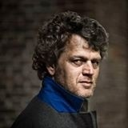
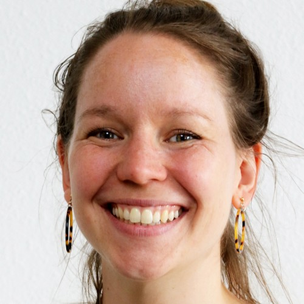
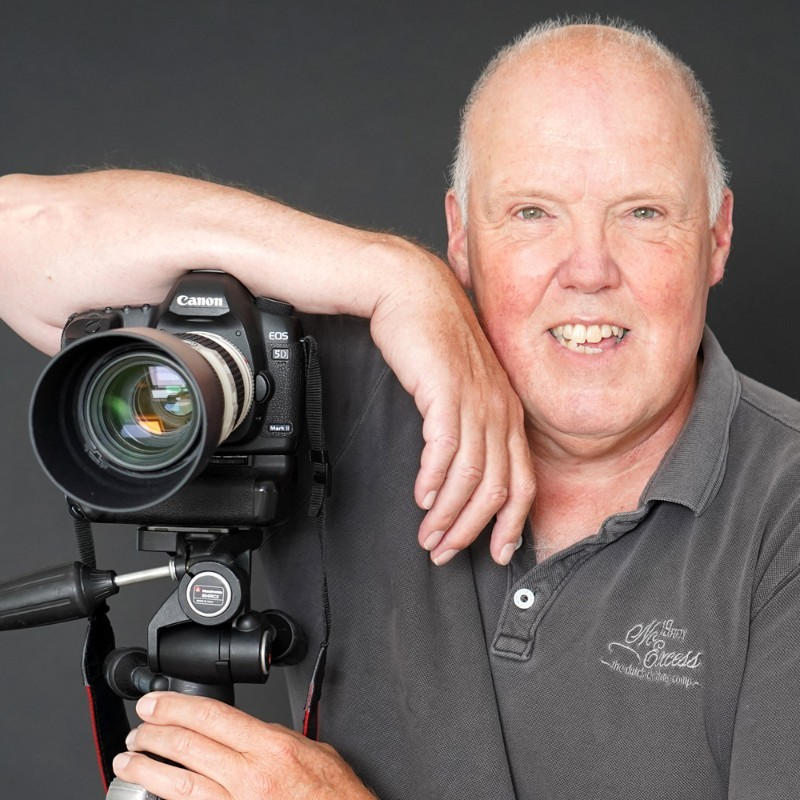
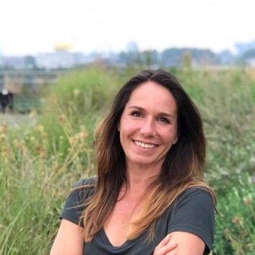
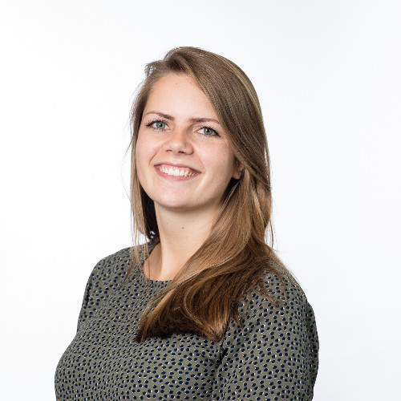

Aanbevelingen
-

Paula
opdrachtgever
"In haar schrijfstijl vindt Annemieke de perfecte balans tussen een down-to-earth benadering en aanstekelijk enthousiasme. Pure eenvoud en vol van smaak."
-

Jeroen Windmeijer
thrillerauteur
"Annemieke is een creatieve duizendpoot, die mensen weet te enthousiasmeren. Met veel positieve energie verbindt ze mensen met elkaar om zich samen voor een gemeenschappelijk doel in te zetten. Altijd houdt ze het te bereiken doel goed voor ogen, zonder te vergeten dat de weg erheen een deel van de reis is. Oog voor de individuele kwaliteiten van de mensen om zich heen, die bij haar tot hun recht komen."
-

Kirsten
voormalig teammanager
"Secuur en humor! Daar denk ik aan bij Annemieke in haar manier van schrijven en haar manier van werken. Ze heeft er voor gezorgd dat de profilering van ons werk op een ontspannende manier werd gestimuleerd. Ze schrijft toegankelijk waardoor het voor veel verschillende mensen goed leesbaar was en tot de verbeelding sprak."
-

Rob
schrijver/fotograaf, ex-collega en vakgenoot
"Annemieke was een aantal jaar mijn opdrachtgever voor het fotograferen van Leidse vrijwilligers. Ze was altijd helder in haar boodschap en snel met het verstrekken van informatie. Een creatieve perfectionist vol met ideeën, brainwaves en suggesties die soms behoorlijk out of the box zijn, zowel op het gebied van tekst als fotografie. Maar die altijd wel altijd het gewenste effect hebben en verder gaan dan veel anderen hadden durven verwachten. Ik kan haar bij iedereen aanbevelen als gedreven en creatieve communicatrice!"
-
Anke
ex-collega
"Annemieke is een kei in het schrijven van teksten die heerlijk lezen: verrassend, ludiek en passend bij de doelgroep. ik vind haar ook erg goed in fotografie en outside the box-denken!"
-

Tamara
Vakgenoot
"Annemieke is een echte doener met een hart voor het brengen van het juiste verhaal. Zij is in staat de essentie te pakken en deze op luchtige en aansprekende wijze te vertalen in haar 'verhalen'. Eenmaal een doel voor ogen dan gaat zij daar volledig voor."
-

Paula
samenwerkingspartner
"Ik heb met Annemieke samengewerkt in de organisatie het jaarlijkse event "Leiden voor Gevorderden". Zij was betrokken vanuit de PR. Haar kritische en creatieve kijk op de communicatie was erg prettig. Annemieke had het doel scherp en toetste continu of de communicatie voldoende aansloot op het doel en het perspectief van de doelgroep. Het was prettig samenwerken."